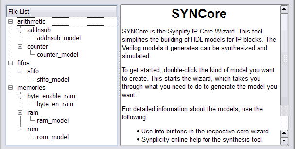
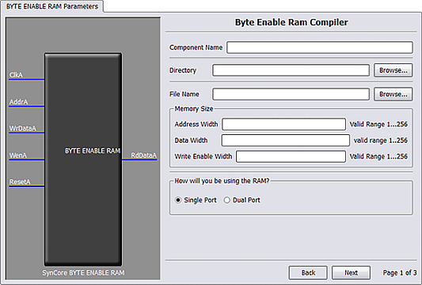
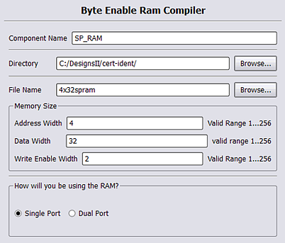
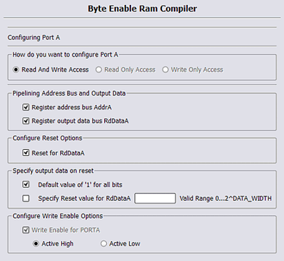
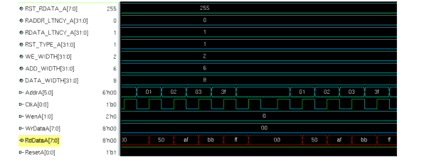
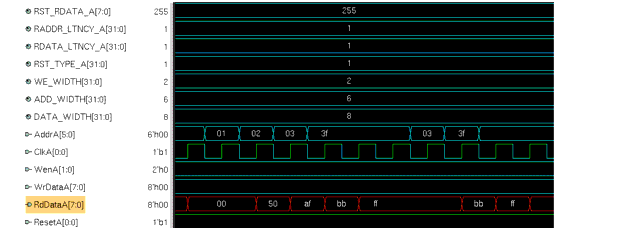
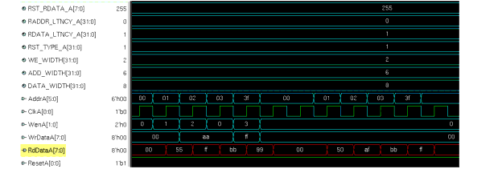

Specifying Byte-Enable RAMs with SYNCore
The SYNCore IP wizard helps you generate SystemVerilog code for your byte-enable RAM implementation requirements.
The following procedure shows you how to generate SystemVerilog code for a byte-enable RAM using the SYNCore IP wizard. Note that the SYNCore byte-enable RAM model uses SystemVerilog. When adding a byte-enable RAM to your design, be sure to enable the System Verilog check box on the Verilog tab of the Implementation Options dialog box or include a set_option -vlog_std sysv statement in your project file to prevent a syntax error.
- Start the wizard.
- From the FPGA synthesis tool GUI, select Run->Launch SYNCore or click the Launch SYNCore icon to start the SYNCore IP wizard.

- In the window that opens, select byte_en_ram and click Ok to open the first page (page1) of the wizard.

- Specify the parameters you need in the wizard. For details about the parameters, see Specifying Byte-Enable RAM Parameters. The BYTE ENABLE RAM symbol on the left reflects any parameters you set.
- After you have specified all the parameters you need, click the Generate button in the lower left corner. The tool displays a confirmation message (TCL execution successful!) and writes the required files to the directory you specified on page 1 of the wizard. The HDL code is in SystemVerilog.
SYNCore also generates a test bench for the byte-enable RAM component. The test bench covers a limited set of vectors. You can now close the SYNCore byte-enable RAM compiler.
- Edit the generated files for the byte-enable RAM component if necessary.
- Add the byte-enable RAM that you generated to your design.
- On the Verilog tab of the Implementation Options dialog box, make sure that SystemVerilog is enabled.
- Use the Add File command to add the Verilog design file that was generated (the filename entered on page 1 of the wizard) and the syncore_*.v file to your project. These files are in the directory for output files that you specified on page 1 of the wizard.
- Use a text editor to open the instantiation_file.vin template file. This file is located in the same output files directory. Copy the lines that define the byte-enable RAM and paste them into your top-level module.
- Edit the template port connections so that they agree with the port definitions in the top-level module; also change the instantiation name to agree with the component name entered on page 1. The following figure shows a template file inserted into a top-level module with the updated component name and port connections in red.
module top
(input ClockA,
input [3:0] AddA
input [31:0] DataIn
input WrEnA,
input Reset
output [31:0] DataOut
)
INST_TAG
SP_RAM #
(.ADD_WIDTH(4),
.WE_WIDTH(2),
.RADDR_LTNCY_A(1), // 0 - No Latency , 1 - 1 Cycle Latency
.RDATA_LTNCY_A(1), // 0 - No Latency , 1 - 1 Cycle Latency
.RST_TYPE_A(1), // 0 - No Reset , 1 synchronous
.RST_RDATA_A({32{1'b1}}),
.DATA_WIDTH(32)
)
4x32spram
(// Output Ports
.RdDataA(DataIn),
// Input Ports
.WrDataA(DataOut),
.WenA(WeEnA),
.AddrA(AddA),
.ResetA(Reset),
.ClkA(ClockA)
);
Port List
Port A interface signals are applicable for both single-port and dual-port configurations; Port B signals are applicable for dual-port configuration only.
|
|
|
|
|
ClkA
|
Input
|
Clock input for Port A
|
|
WenA
|
Input
|
Write enable for Port A; present when Port A is in write mode
|
|
AddrA
|
Input
|
Memory access address for Port A
|
|
ResetA
|
Input
|
Reset for memory and all registers in core; present with registered read data when Reset is enabled; active low (cannot be changed)
|
|
WrDataA
|
Input
|
Write data to memory for Port A; present when Port A is in write mode
|
|
RdDataA
|
Output
|
Read data output for Port A; present when Port A is in read or read/write mode
|
|
ClkB
|
Input
|
Clock input for Port B; present in dual-port mode
|
|
WenB
|
Input
|
Write enable for Port B; present in dual-port mode when Port B is in write mode
|
|
AddrB
|
Input
|
Memory access address for Port B; present in dual-port mode
|
|
ResetB
|
Input
|
Reset for memory and all registers in core; present in dual-port mode when read data is registered and Reset is enabled; active low (cannot be changed)
|
|
WrDataB
|
Input
|
Write data to memory for Port B; present in dual-port mode when Port B is in write mode
|
|
RdDataB
|
Output
|
Read data output for Port B; present in dual-port mode when Port B is in read or read/write mode
|
Specifying Byte-Enable RAM Parameters
When creating a single-port, byte-enable RAM with the SYNCore IP wizard, you must specify a single read address and a single clock; you only need to configure the Port A parameters on page 2 of the wizard.
When creating a dual-port, byte-enable RAM, you must additionally configure the Port B parameters on page 3 of the wizard.
The following procedure lists the parameters you need to specify. For descriptions of each parameter, refer to SYNCore Byte Enable RAM Wizard, on page 3-107 in the reference manual.
- Start the SYNCore byte-enable RAM wizard as described in Specifying Byte-Enable RAMs with SYNCore.
- On page 1 of the byte-enable RAM wizard:
- On page 2 (configuring Port A) of the wizard:
- Select the Port A configuration. Only Read and Write Access mode is valid for single-port configurations; this mode is selected by default.
- Set Pipelining Address Bus and Output Data according to your application. By default, read data is registered; you can register both the address and data registers.
- Set the Configure Reset Options. Enabling the checkbox enables the synchronous reset for read data. This option is enabled only when the read data is registered. Reset is active low and cannot be changed.
- Configure output reset data value options under Specify output data on reset; reset data can be set to default value of all '1' s or to a user-defined decimal value. Reset data value options are disabled when the reset is not enabled for Port A.
- Set Write Enable for Port A value; default for the write-enable level is active high.
- If you are generating a dual-port, byte-enable RAM, set the Port B parameters on page 3 (note that the Port B parameters are only enabled when Dual Port is selected on page 1).
The Port B parameters are identical to the Port A parameters on page 2. When using the dual-port configuration, when one port is configured for read access, the other port can only be configured for read/write access or write access.
- Generate the byte-enable RAM by clicking Generate. Add the file to your project and edit the template file as described in Specifying Byte-Enable RAMs with SYNCore. For read/write timing diagrams, see Read/Write Timing Sequences.
SYNCore Byte-Enable RAM Wizard Parameters
The following describes the parameters you can set in the byte-enable RAM wizard, which opens when you select byte_en_ram.
SYNCore Byte-Enable RAM Parameters Page 1

|
Component Name
|
Specifies the name of the component. This is the name that you instantiate in your design file to create an instance of the SYNCore byte-enable RAM in your design. Do not use spaces.
|
|
Directory
|
Specifies the directory where the generated files are stored. Do not use spaces. The following files are created:
- filelist.txt - lists files written out by SYNCore
- options.txt - lists the options selected in SYNCore
- readme.txt - contains a brief description and known issues
- syncore_be_ram_sdp.v - SystemVerilog library file required to generate single or simple dual-port, byte-enable RAM model
- syncore_be_ram_tdp.v - SystemVerilog library file required to generate true dual-port byte-enable RAM model
- testbench.v - Verilog testbench file for testing the byte-enable RAM model
- instantiation_file.vin - describes how to instantiate the wrapper file
- component.v - Byte-enable RAM model wrapper file generated by SYNCore
Note that running the byte-enable RAM wizard in the same directory overwrites the existing files.
|
|
Filename
|
Specifies the name of the generated file containing the HDL description of the compiled byte-enable RAM. Do not use spaces.
|
|
Address Width
|
Specifies the address depth for Ports A and B. The unit used is the number of bits; the default is 2
|
|
Data Width
|
Specifies the width of the data for Ports A and B. The unit used is the number of bits; the default is 2
|
|
Write Enable Width
|
Specifies the write enable width for Ports A and B. The unit used is the number of byte enables; the dafault is 2, the maximum is 4.
|
|
Single Port
|
When enabled, generates a single-port, byte-enable RAM (automatically enables single clock).
|
|
Dual Port
|
When enabled, generates a dual-port, byte-enable RAM (automatically enables separate clocks for each port).
|
SYNCore Byte-Enable RAM Parameters Pages 2 and 3
The port implementation parameters on pages 2 and 3 are identical, but page 2 applies to Port A (single- and dual-port configurations), and page 3 applies to Port B (dual-port configurations only). The following figure shows the parameters on page 2 for Port A.

|
Read and Write Access
|
Specifies that the port can be accessed by both read and write operations (only mode allowed for single-port configurations).
|
|
Read Only Access
|
Specifies that the port can only be accessed by read operations (dual-port mode only).
|
|
Write Only Access
|
Specifies that the port can only be accessed by write operations (dual-port mode only).
|
|
Register address bus AddrA/B
|
Adds registers to the read address lines.
|
|
Register output data bus RdDataA/B
|
Adds registers to the read data lines. By default, the read data register is enabled.
|
|
Reset for RdDataA/B
|
Specifies the reset type for registered read data:
- Reset type is synchronous when Reset for RdDataA/B is enabled
- Reset type is no reset when Reset for RdDataA/B is disabled
|
|
Specify output data on reset
|
Specifies reset value for registered read data (applies only when RdDataA/B is enabled):
- Default value of `1' for all bits - sets read data to all 1's on reset
- Specify Reset value for RdDataA/B - specifies reset value for read data; when enabled, value is entered in adjacent field.
|
|
Write Enable for Port A/B
|
Specifies the write enable level for Port A/B. Default is Active High.
|
SYNCore Byte-Enable RAM Compiler
The SYNCore byte-enable RAM compiler generates SystemVerilog code describing byte-enabled RAMs. The data width of each byte is calculated by dividing the total data width by the write enable width. The byte-enable RAM compiler supports both single- and dual-port configurations.
This section describes the following:
- Functional Overview, on page
- Write Operation, on page
- Read Operation, on page
- Parameter List, on page
For further information, refer to the following:
Functional Overview
The SYNCore byte-enable RAM component supports bit/byte-enable RAM implementations using blockRAM and distributed memory. For each configuration, design optimizations are made for optimum use of core resources. The timing diagram that follow illustrate the supported signals for byte-enable RAM configurations.
Byte-enable RAM can be configured in both single- and dual-port configurations. In the dual-port configuration, each port is controlled by different clock, enable, and control signals. User configuration controls include selecting the enable level, reset type, and register type for the read data outputs and address inputs.
Reset applies only to the output read data registers; default value of read data on reset can be changed by user while generating core. Reset option is inactive when output read data is not registered.
Read/Write Timing Sequences
The waveforms in this section describe the behavior of the byte-enable RAM for both read and write operations.
Read Operation
On each active edge of the clock when there is a change in address, data is valid on the same clock or next clock (depending on latency parameter values for read address and read data ports). Active reset ignores any change in input address, and data and output data are initialized to user-defined values set by parameters RST_RDATA_A and RST_RDATA_B for port A and port B, respectively.
The following waveform shows the read sequence of the byte-enable RAM component with read data registered in single-port mode.

As shown in the above waveform, output read data changes on the same clock following the input address changed. When the address changes from 'h00 to 'h01, read data changes to 50 on the same clock, and data will be valid on the next clock edge.
The following waveform shows the read sequence with both the read data and address registered in single-port mode.

As shown in the above waveform, output read data changes on the next clock edge after the input address changes. When the address changes from 'h00 to 'h01, read data changes to 50 on the next clock, and data is valid on the next clock edge.
NOTE:
The read sequence for dual-port mode is the same as single port; read/write conflicts occurring due to accessing the same location from both ports are the user's responsibility.
Write Operation
The following waveform shows a write sequence with read-afterwrite in single-port mode.

On each active edge of the clock when there is a change in address with an active enable, data is written into memory on the same clock. When enable is not active, any change in address or data is ignored. Active reset ignores any change in input address and data.
The width of the write enable is controlled by the WE_WIDTH parameter. Input data is symmetrically divided and controlled by each write enable. For example, with a data width of 32 and a write enable width of 4, each bit of the write enable controls 8 bits of data (32/4=8). The byte-enable RAM compiler will error for wrong combination data width and write enable values.
The above waveform shows a write sequence with all possible values for write enable followed by a read:
- Value for parameter WE_WIDTH is 2 and DATA_WIDTH is 8 so each write enable controls 4 bits of input data.
- WenA value changes from 1 to 2, 2 to 0, and 0 to 3 which toggles all possible combinations of write enable.
The first sequence of address, write enable changes to perform a write sequence and the data patterns written to memory are 00, aa, ff. The read data pattern reflects the current content of memory before the write.
The second address sequence is a read (WenA is always zero). As shown in the read pattern, only the respective bits of data are written according to the write enable value.
NOTE:
The write sequence for dual-port mode is the same as single port; conflicts occurring due to writing the same location from both ports are the user's responsibility.
Parameter List
The following table lists the file entries corresponding to the byte-enable RAM wizard parameters.
|
|
|
|
|
|
ADDR_WIDTH
|
Bit/byte enable RAM address width
|
2
|
multiples of 2
|
|
DATA_WIDTH
|
Data width for input and output data, common to both Port A and Port B
|
8
|
2 to 256
|
|
WE_WIDTH
|
Write enable width, common to both Port A and Port B
|
2
|
|
|
CONFIG_PORT
|
Selects single/dual port configuration
|
1 (single port)
|
0 = dual-port
1 = single-port
|
|
RST_TYPE_A/B
|
Port A/B reset type selection
|
1 (synchronous)
|
0 = no reset
1 = synchronous
|
|
RST_RDATA_A/B
|
Default data value for Port A/B on active reset
|
All 1's
|
decimal value
|
|
WEN_SENSE_A/B
|
Port A/B write enable sense
|
1 (active high)
|
0 = active low
1 = active high
|
|
RADDR_LTNCY_A/B
|
Optional read address register select Port A/B
|
1
|
0 = no latency
1 = one cycle latency
|
|
RDATA_LTNCY_A/B
|
Optional read data register select Port A/B
|
1
|
0 = no latency
1 = one cycle latency
|
Copyright © 2009 Synopsys, Inc. All rights reserved.